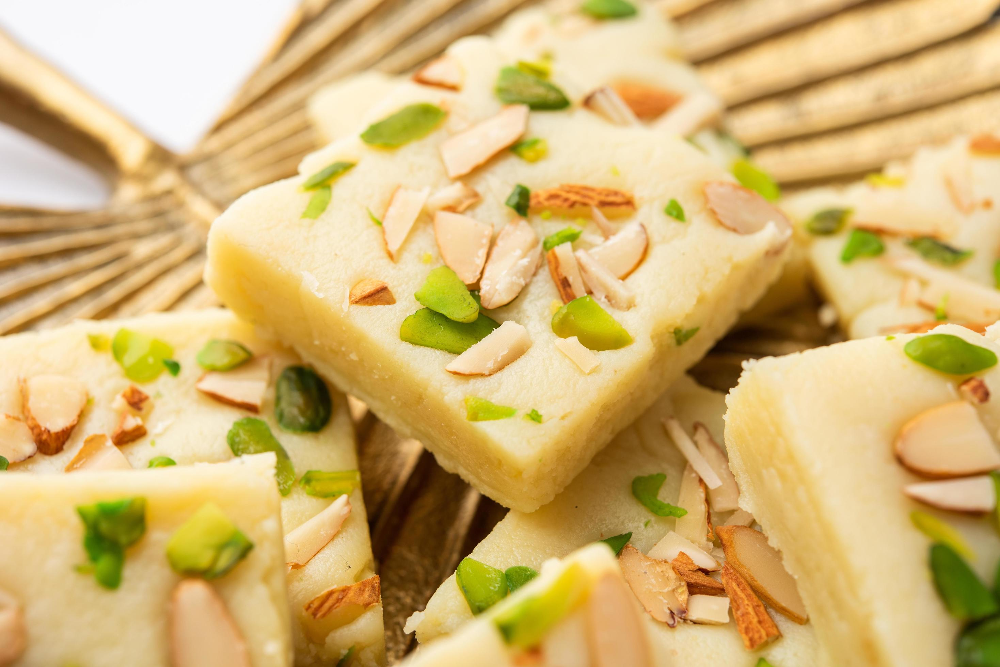

Barfi
Ingredients
- sugar, Salt, Nuts
- Ghee, Semolina
- Milk, Milk powder
- Cardamom
Recipe
- Heat ghee on medium heat then add milk & continue to heat the mixture till it is at room temp.
- Start adding milk powder. Use a whisk to smooth out granular pieces.
- Add nuts and almonds, continue stirring the mixture.
- Take the mixture put it on a plate and place it in the fridge.

Champakali
Ingredients
- sugar, food coloring
- Ghee or oil
- All purpose flour
Recipe
- Add ajwain, red chili powder, cumin seeds, salt to the flour mix.
- Mix it well and now add a little amount of water and knead the dough.
- Once soft dough is ready stat making traditional champakali.
Gulab jamun
Ingredients
- Milk, Milk powder
- flour, baking powder
- Sugar, water, Ghee
Recipe
- Stir milk & baking powder,flour then mix in melted ghee, pour milk & continue to mix.
- Stir together sugar,water and a pinch of cardamom.
- Knead the dough & make small balls then fry them.
- Place the balls in the syrup.
- Ready to serve